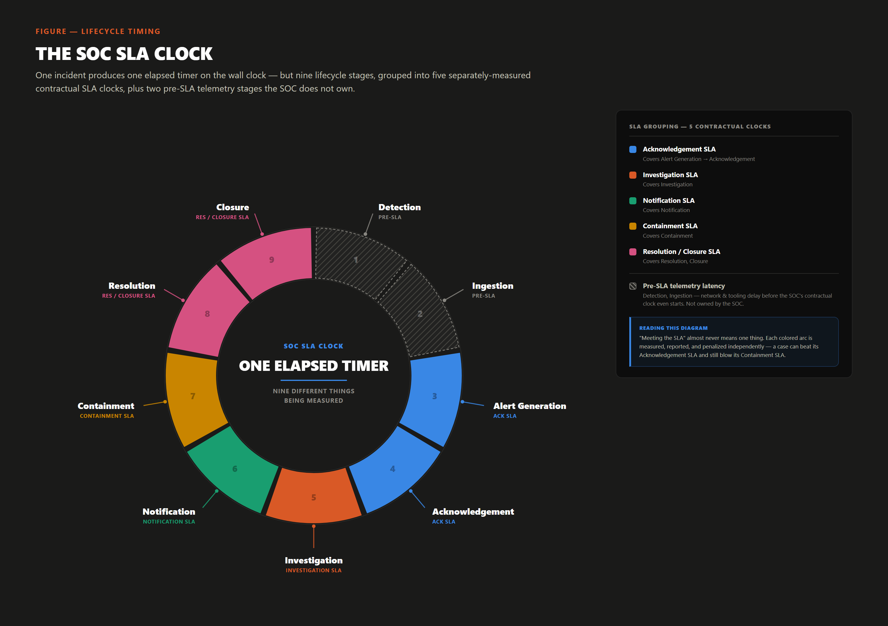
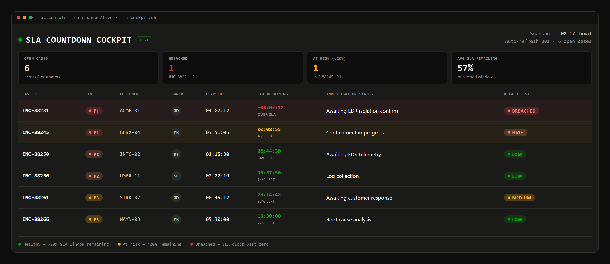

A contract shows one word — "SLA." Inside the SOC, that word decomposes into a stack of separately-triggered timers, each started and stopped by a different party, which is why a report can read green while an incident is still open, or red on a case handled well.

Contracts typically report six of these clocks to the customer — acknowledge, investigate, notify, contain, resolve, close — while escalation stays an internal handoff governed by OLA, not a line item in the customer contract. Inside the SOC's own case system the taxonomy is finer still, because each split marks a handoff of timer control: ticketing system, analyst, Tier 2 lead, legal, customer.
Starts when an alert is created, stops when an analyst claims it — Microsoft's MTTA metric uses exactly this boundary, not any finding, so an analyst can acknowledge in seconds and then sit idle for an hour without breaching anything.
Starts at ownership, stops when the analyst assigns a first categorization and severity — the pivot for the entire stack, since every downstream target keys off it, so an under-called severity quietly loosens every SLA that follows.
Starts when a case crosses the contract's notification threshold, stops when the customer is formally informed — but legal and PR review of permitted language routinely sits inside this window, so the analyst who found the issue rarely controls the stop timestamp.
Starts when a Tier 1 analyst determines a case exceeds their authority, stops when Tier 2/3 acknowledges the handoff — governed by an internal operational-level agreement (OLA) rather than the customer SLA, though a slow escalation usually turns a borderline downstream clock into an outright breach.
Starts when the decision to act is made and is supposed to stop the moment the threat is "contained" — a judgment call, not an instrument-measurable event, so the analyst, the IR lead, and the customer can each reasonably assert a different timestamp.
Starts once containment is asserted and covers root-cause and scope work, stopping when that scope is established — it consumes the largest share of analyst hours on most cases, yet is the clock most often excluded from the SLA entirely, because contracts are written for triage-and-respond, not forensics.
Supposed to start at containment and stop at "resolved" — but resolved is overloaded: contained, eradicated, and fully recovered are three distinct states, and a contract that doesn't specify which one closes the clock leaves the earliest defensible option free to be picked.
Starts at resolution, stops at formal sign-off — often gated on the customer confirming the case is done, so a fully resolved case can sit open on the dashboard, accumulating time against a metric the SOC can no longer influence.
Starts at closure, stops when a formal RCA is delivered, paced by the SOC's own capacity rather than external pressure — the deadline most often quietly missed, because it competes directly with time an analyst could spend on a case still counting down.

A single "SLA compliance: 94%" summary hides that a shift lead manages a portfolio of countdowns, each owned by a different person — a case can be healthy on acknowledgement while quietly burning through containment in the next row down, which only a nine-clock view shows in time to act.
| Severity (illustrative) | Acknowledge | Investigation Begins | Notification | Containment | Resolution | Closure / RCA |
|---|---|---|---|---|---|---|
| P1 Critical — confirmed active compromise, business-critical system, exfiltration suspected | 15 min | 30 min | 1 hr (then every 2 hrs) | 4 hrs | 24 hrs | Within 5 business days |
| P2 High — likely malicious, contained blast radius, no confirmed exfiltration | 30 min | 1 hr | 4 hrs | 8 hrs | 3 business days | Within 10 business days |
| P3 Medium — suspicious activity, low immediate business impact | 2 hrs | 4 hrs | 1 business day | N/A (monitor) | 5 business days | Within 15 business days |
| P4 Low — informational, policy violation, benign-positive candidate | 1 business day | 2 business days | On closure | N/A | 10 business days | Optional |
These severity definitions, values, and business-day conventions are invented for illustration only. Real contracts define "acknowledge" versus "respond" differently, define an hour as business-hours versus 24×7 differently, and layer pause/stop-clock conditions — customer non-response, scheduled maintenance windows, disputed severity — that a simple table like this one cannot show.